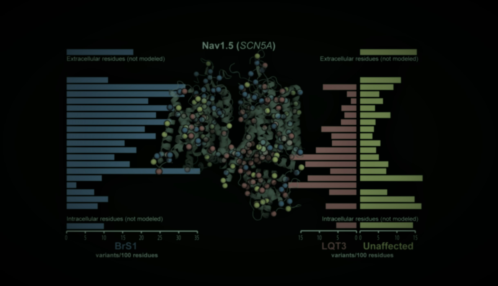
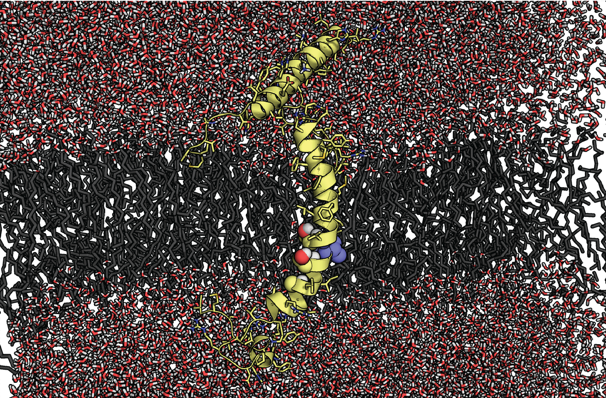

What is the significance of genetic variants to those who carry them?
Next-generation sequencing has revealed countless variants across the genome, yet translating those observations into patient-level insights remains challenging, especially for rare alleles. Our lab is focused on resolving variants of uncertain significance by integrating in vitro and in silico evidence to quantify disease probability rather than relying on binary pathogenicity labels. We begin with cardiac ion channel genes implicated in long QT syndrome, Brugada syndrome, and related arrhythmias because they offer a tractable system for connecting molecular mechanism to clinical outcome. For an overview of our approach, watch this talk on YouTube.
We combine high-throughput functional genomics, CRISPR-edited induced pluripotent stem cell models, protein structure, and Bayesian statistical frameworks to estimate variant-induced penetrance. Increasingly, this work runs on an integrated, open-source pipeline: large language models read the literature, predictive features and 3D structure are folded into priors, and a probabilistic model returns calibrated risk with explicit uncertainty — helping us understand how polygenic background modifies the expressivity of rare variants and deliver actionable risk profiles for patients and families.
How the pipeline works
1 · Curate
LLM agents pull per-variant carrier counts, phenotypes, and study context from PubMed, then a multi-model consensus scores gene–disease validity against the ClinGen SOP.
2 · Annotate
We aggregate AlphaMissense, REVEL, CADD, ClinVar, and gnomAD into one unified database, so every variant carries the same panel of predictive evidence.
3 · Localize
Variants are mapped onto AlphaFold structures with elastic-network analysis, so pathogenic clusters raise the prior for nearby variants of uncertain significance.
4 · Estimate
A Bayesian model fuses carriers, features, and structural priors into penetrance estimates with full uncertainty — our patented method — published through the browser.
Research innovation
- Functional genomics + predictive modeling (2018–present). We pioneered deep mutational scanning and scalable automated patch clamp assays to interpret cardiac ion channel variants. These data feed predictive models that estimate disease penetrance for individual carriers.
- Bayesian penetrance estimation. Our patented Bayesian Method to Estimate Variant-Induced Disease Penetrance (US-20220406461-A1) provides a framework for incorporating functional data, clinical observations, and genetic background to refine risk estimates.
- LLM-assisted literature and gene–disease curation. Large language models extract variant, phenotype, and carrier evidence from the published record at scale, and a multi-model consensus reproduces ClinGen-style gene–disease validity classifications — turning months of manual curation into a reviewable, auditable workflow.
VariantBrowser.org
We distribute these resources through VariantBrowser.org, a freely available portal used by clinicians, genetic counselors, and researchers worldwide. Each gene page unifies published carrier counts, in vitro functional data, structural context, and in silico predictors behind a calibrated, Bayesian estimate of disease probability. Four cardiac channelopathy genes are live today — together spanning more than 55,000 variants — with many more in active development.
Perturbation of ion channel function and relationship to disease
Current prediction algorithms struggle to incorporate the diverse genetic and environmental factors that shape penetrance. By curating more than 1,400 SCN5A variants—including 304 with functional data—we show that modest perturbations yield heterogeneous clinical presentations, whereas extreme loss or gain of function produces more consistent outcomes. Modeling the probability of disease from functional effects therefore offers a clearer path to clinical decision-making than binary classifications.

Intravariant heterogeneity of clinical presentation
Carriers of the same variant can present very differently. Peak current — a proxy for channel function — tracks with, but does not fully determine, how many carriers are diagnosed with Brugada syndrome (BrS1). Capturing that spread is exactly what our penetrance models are built to do.
| Variant | Peak current [1] | # unaffected [2] | # BrS1 [3] |
|---|---|---|---|
| S1787N | 95% | 12 | 1 |
| Y1795H | 66% | 7 | 5 |
| R367H | 0% | 3 | 16 |
[1] Proxy for channel function · [2] Carriers without a clinical phenotype · [3] Carriers diagnosed with BrS1
Predicting ion channel function
Our work blends experimental and computational strategies to characterize variant effects at scale. We interrogate structural consequences with Rosetta modeling, molecular dynamics in AMBER, and NMR, and we generate functional measurements through deep mutational scanning and automated patch clamp platforms. These complementary approaches let us build predictive models that can be validated in disease-relevant systems.

High-throughput variant characterization
Interpreting variants one at a time cannot keep pace with sequencing. We measure variant effects at scale, so that thousands of variants can be characterized functionally and fed directly into our penetrance models.
Deep mutational scanning
We built the most comprehensive variant-effect map to date for KCNH2/Kv11.1, quantifying cell-surface trafficking for thousands of variants in a single multiplexed experiment.
Automated patch clamp
Scalable, high-throughput electrophysiology measures the biophysical consequences of variants — peak current, gating, and kinetics — far faster than manual recording.
iPSC-cardiomyocytes
CRISPR-edited stem-cell cardiomyocytes with defined genetic backgrounds test how common, polygenic variation reshapes the expressivity of rare, large-effect variants.
Polygenic risk scores modify disease susceptibility. By engineering iPSC-cardiomyocytes with defined genetic backgrounds, we test how common alleles modulate the expressivity of rare, large-effect variants. In recent work (2026), we used quantitative proteomics to show how elevated QT polygenic risk reshapes Kv11.1 (hERG) trafficking networks in these cardiomyocytes — connecting common-variant background to a concrete molecular mechanism and revealing nonlinear interactions that influence arrhythmia risk and treatment response.
Extending to atrial fibrillation
The framework is gene-agnostic, and we are now applying it beyond long QT and Brugada syndromes. A current pilot brings our LLM-assisted, ClinGen-style gene–disease validity curation to atrial fibrillation, starting with NPPA, GJA5, KCNA5, and PITX2 — reproducing expert curation in a transparent, reviewable workflow that can scale to many more genes.
Clinical translation: breakthrough events
Knowing a variant is pathogenic is not the same as knowing whether a patient will do well on treatment. Using harmonized international cohorts, we build survival models of “breakthrough” cardiac events — events that occur despite beta-blocker therapy — in KCNH2 (type 2 long QT syndrome) carriers, with the goal of flagging the individuals who need more aggressive management before an event occurs.
Grants and funding
Our research is supported by NIH R01HL160863 (2022–2027), NIH K99/R00 HL135442 (2017–2022), and the American Heart Association Career Development Award (2021–2024).